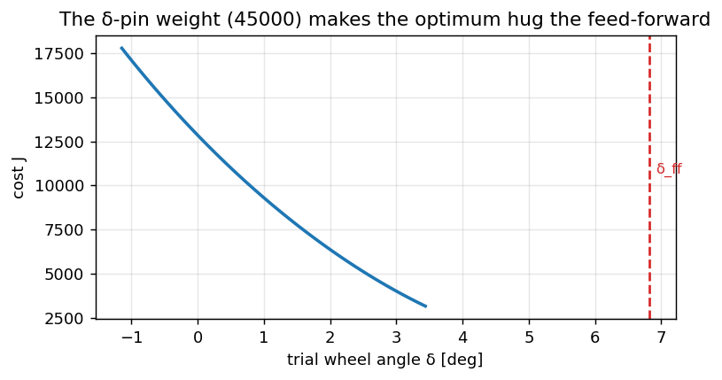

MPC как игрушка — семь шагов вдоль пути#
Pure Pursuit выбирает один \(\delta\), попадающий в точку взгляда. MPC оптимизирует короткую будущую траекторию, применяет первую команду и решает заново на следующем кадре.
|
роль |
|---|---|
|
MPC в области времени, как у штатных систем (по умолчанию на дороге) |
|
геометрическая база и запасной вариант |
Эта глава учит MPC как игрушку в области пути, которая помещается в голове — семь шагов ниже. Эта
конструкция ездила как контроллер vp / VisionPilot до 2026-08-21, когда fp вытеснил её с дороги и она
была удалена; код живёт в истории git, а урок остаётся здесь, потому что это самый ясный способ понять,
что делает любой MPC. Следующая глава — fp в области времени, который и рулит на
самом деле.
Планировщики стоят за одним интерфейсом IPlanner, и сервис Planner держит ровно один из них:
pure pursuit
pp:lateral/pp_planner.cpp.flowpilot
fp:lateral/fp_planner.cppиflowpilot_mpc.cpp(\(N{=}16\), сетка по времени → 2.5 с), со сменным численным методом —kappa_solver_gradилиkappa_solver_acados.Слияние пути (разметка ↔ план):
laneLinesToPathвutils/lane_path.cpp/core/path_fusion.py.
Все они выдают кривизну, а не угол. Именно это позволяет менять их на ходу и сравнивать на одном беге:
перевод в угол руля происходит один раз, ниже по течению, в Control.
Обозначения состояния#
обозначение |
смысл |
|---|---|
CTE |
поперечное смещение от центра полосы, м |
epsi |
ошибка курса относительно касательной к пути, рад |
\(\kappa\) |
кривизна пути, 1/м |
\(\delta\) |
угол переднего колеса, рад |
\(L\) |
колёсная база, 2.636 м (config; в примерах округляют до 2.64) |
Прямая: CTE, epsi, \(\kappa\approx 0\) → доминирует обратная связь. Дуга: доминирует упреждение от \(\kappa\). Плохая или запоздавшая \(\kappa\) → снос наружу.

Рис. 22 Когда \(\kappa\) планировщика отстаёт от кривизны по рыску, SWA недобирает и CTE растёт.#
Семь шагов (MPC в области пути — как игрушка)#
Общие игрушечные константы для всех примеров ниже:
import math
import numpy as np
L = 2.64 # wheelbase [m]
N = 20 # horizon steps
DS = 0.5 # path step [m] (~1 s preview at ~10 m/s)
K_US = 0.0015 # understeer-ish term in the toy ff
FF_SCALE = 2.0
W_DELTA = 45000.0 # pin δ to δ_ff
W_DDELTA = 15000.0
1. Измерить CTE, epsi, \(\kappa\)#
Разметка → полилиния центра полосы → квадратичная \(y = a x^2 + b x + c\) в системе машины. У машины (\(x\approx 0\)):
\(\mathrm{CTE} \approx c\) (поперечное смещение),
\(\mathrm{epsi} \approx b\) (курс относительно пути),
\(\kappa \approx 2a\) (кривизна подгонки).
Если окно подгонки короткое или шумное, \(\kappa\) выходит малой и запоздавшей, и всю эту ошибку наследует вся упреждающая цепочка.
def fit_lane_state(x, y):
"""Quadratic fit y≈a x²+b x+c → (CTE, epsi, kappa) at x=0."""
a, b, c = np.polyfit(x, y, 2)
return float(c), float(b), float(2 * a)
# Toy centerline: gentle left arc in device frame (y right+)
x = np.linspace(0, 30, 31)
kappa_true = 0.02
y = 0.5 * kappa_true * x**2 + 0.05 * x + 0.30 # also 30 cm off + slight epsi
cte, epsi, kappa = fit_lane_state(x, y)
print(f"CTE={cte:.3f} m, epsi={math.degrees(epsi):.2f}°, κ={kappa:.4f} 1/m "
f"(true κ={kappa_true})")
Вы должны получить CTE ≈ 0.3 м и \(\kappa\) около 0.02. На настоящем беге сравните κ из control/lane_keep_debug с yaw_rate / v.
2. Предсказать траектории для пробного \(\delta\)#
Игрушка катит по длине пути, а не по часам. Для кандидата \(\delta\):
Нос повёрнут относительно дороги (\(\mathrm{epsi}\neq 0\)) → CTE интегрируется.
\(\tan\delta/L\) должен совпасть с \(\kappa\) дороги, иначе интегрируется ошибка курса.
def predict(cte, epsi, kappa, delta, ds=DS, n=N, L=L):
"""Return arrays (cte[0..n], epsi[0..n]) including the start state."""
cs, es = [cte], [epsi]
for _ in range(n):
cte = cte - math.sin(epsi) * ds
epsi = epsi + (kappa - math.tan(delta) / L) * ds
cs.append(cte)
es.append(epsi)
return np.array(cs), np.array(es)
cte0, epsi0, kappa = 0.40, 0.0, 0.02
delta_ff_kin = math.atan(L * kappa)
for name, delta in [("δ=0", 0.0), ("δ=atan(Lκ)", delta_ff_kin)]:
cs, _ = predict(cte0, epsi0, kappa, delta)
print(f"{name:12s} CTE@0={cs[0]:.3f} → CTE@end={cs[-1]:.3f} m")
При неверном \(\delta\) CTE растёт; геометрический \(\delta\) держит лучше. Это только предсказатель — какой \(\delta\) победит, решает стоимость.
3. Оценить через \(J\)#
{kind=link}

Рис. 23 Стоимость по пробному углу: огромный вес прижатия к δ тянет минимум на упреждение, поэтому спуск почти не двигает затравку.#
Меньше — лучше. Слагаемые, упрощённо (они из VisionPilot — оттуда игрушка и происходит):
Веса растут с \(|\kappa|\) (curve_factor = 1 + 20·κ). Слагаемое \(W_\delta{=}45000\) огромно, поэтому оптимум прижимается к \(\delta_{\mathrm{ff}}\).
def cost(cte0, epsi0, kappa, deltas, v=15.0,
cte_w_base=20.0, epsi_w_base=10.0, quartic=5.0):
"""Score a sequence of wheel angles (len N)."""
assert len(deltas) == N
v2 = v * v
curve = 1.0 + 20.0 * abs(kappa)
cte_w = cte_w_base * curve
epsi_w = epsi_w_base * curve
cte, epsi = cte0, epsi0
j = 0.0
for s, delta in enumerate(deltas):
j += cte_w * cte**2
j += cte_w * quartic * cte**4
j += epsi_w * epsi**2
delta_ff = FF_SCALE * (math.atan(L * kappa) + K_US * v2 * kappa)
j += W_DELTA * (delta - delta_ff) ** 2
if s > 0:
j += W_DDELTA * min(max(v2, 9.0), 25.0) * (delta - deltas[s - 1]) ** 2
# one predict step
cte = cte - math.sin(epsi) * DS
epsi = epsi + (kappa - math.tan(delta) / L) * DS
return j
kappa = 0.02
delta_ff = FF_SCALE * (math.atan(L * kappa) + K_US * 15**2 * kappa)
for scale in (0.0, 0.5, 1.0, 1.5):
deltas = [scale * delta_ff] * N
j = cost(0.20, 0.0, kappa, deltas)
print(f"δ={math.degrees(scale*delta_ff):5.2f}° J={j:.1f}")
Минимум ожидается около scale=1 (\(\delta\approx\delta_{\mathrm{ff}}\)). Мысленно поставьте W_DELTA=0: порядок может перевернуться в сторону \(\delta\), минимизирующего чистую CTE.
4. Построить \(\delta_{\mathrm{ff}}\)#
Упреждение — это руление, которое нужно, даже если вы уже по центру:
Оно линейно по \(\kappa\). Недооценили \(\kappa\) → недокрутили дугу. На прямой \(\kappa\approx 0\) → \(\delta_{\mathrm{ff}}\approx 0\), и машину везёт обратная связь.
def delta_ff(kappa, v, ff_scale=FF_SCALE, L=L, K_us=K_US):
return ff_scale * (math.atan(L * kappa) + K_us * v * v * kappa)
for kappa in (0.0, 0.01, 0.02, 0.03):
d = delta_ff(kappa, v=20.0)
# What if perception returns only 66% of true kappa?
d_bad = delta_ff(0.66 * kappa, v=20.0)
print(f"κ={kappa:.3f} δ_ff={math.degrees(d):5.2f}° "
f"if κ×0.66 → {math.degrees(d_bad):5.2f}°")
5. Решить (тёплый старт и градиент)#
Затравка, затем шаги по конечным разностям или градиенту по последовательности \(\delta\) (в C++ около 80 итераций). На практике на дорожных бегах спуск почти не двигает затравку — качество затравки ≈ качество выхода.
Игрушка схлопывает горизонт; настоящий солвер — нет
Ради читаемости блок ниже оптимизирует один общий \(\delta\) на все \(N\) узлов — скалярный line search, не настоящий MPC. Этого хватает, чтобы показать: спуск почти не уходит от хорошей затравки. Боевой солвер двигает всю последовательность \(\delta_0\ldots\delta_{N-1}\); не читайте этот блок как то, сколько переменных у MPC на самом деле.
def warm_start(cte, epsi, kappa, v, k_cte_base=0.6, k_epsi=0.3):
v2 = v * v
k_cte = max(k_cte_base / (1.0 + v2), 0.0)
fb = max(-0.25, min(0.25, k_cte * cte + k_epsi * epsi))
d0 = delta_ff(kappa, v) + fb
return [d0] * N
def solve(cte, epsi, kappa, v, iters=40, step=2e-4):
"""Tiny FD gradient descent on a shared δ (toy; C++ optimizes the sequence)."""
deltas = warm_start(cte, epsi, kappa, v)
best = cost(cte, epsi, kappa, deltas, v=v)
for _ in range(iters):
# one shared angle for the demo
d = deltas[0]
trial_p = [d + step] * N
trial_m = [d - step] * N
jp = cost(cte, epsi, kappa, trial_p, v=v)
jm = cost(cte, epsi, kappa, trial_m, v=v)
grad = (jp - jm) / (2 * step)
d_new = d - 5e-8 * grad # tiny step — cost is stiff in δ
deltas = [d_new] * N
j = cost(cte, epsi, kappa, deltas, v=v)
if j < best:
best = j
else:
deltas = [d] * N
break
return deltas, best
cte, epsi, kappa, v = 0.20, 0.02, 0.02, 18.0
seed = warm_start(cte, epsi, kappa, v)
sol, j = solve(cte, epsi, kappa, v)
print(f"seed {math.degrees(seed[0]):.3f}° → solved {math.degrees(sol[0]):.3f}° J={j:.1f}")
print(f"|Δδ|={abs(math.degrees(sol[0]-seed[0])):.4f}° (often ~0 on road)")
6. Применить первый отсчёт → ограничения → SWA → PID → HCA#
Взять команду чуть впереди по горизонту (задержка), затем зажать:
предел угла, растущий со скоростью,
ограничение скорости изменения на кадр,
\(\delta \times\)
steer_ratio→ угол рулевого колеса,угловой PID → момент \(\in[\pm 300]\) cNm →
HCA_01на CAN.
STEER_RATIO = 15.7
def apply_limits(delta_cmd, delta_prev, v, max_slew_deg=8.0):
# soft speed-growing angle cap [deg]
cap = math.radians(max(8.0, min(25.0, 8.0 + v)))
d = max(-cap, min(cap, delta_cmd))
slew = math.radians(max_slew_deg)
d = max(delta_prev - slew, min(delta_prev + slew, d))
swa = d * STEER_RATIO
return d, swa
delta_plan = sol[1] if len(sol) > 1 else sol[0] # "look ahead" one sample
d_prev = 0.0
d_out, swa = apply_limits(delta_plan, d_prev, v=18.0)
print(f"wheel {math.degrees(d_out):.2f}° SWA {math.degrees(swa):.1f}° "
f"(PID→torque happens in Control, CAN framing in Platform)")
Насыщение на ±300 cNm означает, что машина не может исполнить, а не что стоимость хотела больше. Отладочный флаг и индикация в интерфейсе: предел руления. Вся половина шага «δ → момент» имеет собственную главу: Угловой контур.
7. Повторить на следующем кадре#
Новые vision/lanes (медиана ~42 мс на нынешнем телефоне) → новые CTE/epsi/\(\kappa\) → снова шаг 1.
MPC не гонит всю секунду в открытом контуре: применяется только первая команда, затем план выбрасывается и строится заново от измеренного состояния.
def one_phone_frame(cte, epsi, kappa, v, delta_prev):
"""Steps 4→6 for one camera frame (measure assumed already done)."""
deltas = warm_start(cte, epsi, kappa, v)
# real code runs gradient; seed≈solution on many bags
d_plan = deltas[1] if len(deltas) > 1 else deltas[0]
d_out, swa = apply_limits(d_plan, delta_prev, v)
return d_out, swa
# Structural MPC loop — new measurement every frame, plan discarded
delta_prev = 0.0
for frame in range(5):
# step 1 would refresh cte, epsi, kappa from vision here
cte, epsi, kappa, v = 0.20, 0.01, 0.02, 18.0
delta_prev, swa = one_phone_frame(cte, epsi, kappa, v, delta_prev)
print(f"frame {frame}: δ={math.degrees(delta_prev):.2f}° SWA={math.degrees(swa):.1f}°")
# Why κ quality matters more than "more MPC iterations"
print("\ncommand vs measured κ (CTE=epsi=0):")
for k_meas in (0.020, 0.013, 0.008): # truth, ×0.66, worse
d = warm_start(0.0, 0.0, k_meas, 20.0)[0]
print(f" κ_meas={k_meas:.3f} → δ_seed={math.degrees(d):.2f}°")
Применяется только первая команда; остальной горизонт выбрасывается. Если \(\kappa\) занижена на каждом кадре, то каждая затравка недобирает — спуск не может выдумать кривизну, которую шаг 1 никогда не измерил.
До контроллера: опора — это слияние#
И fp, и pp следят за полилинией на vision/path, и она — не сырая разметка и не сырой план
модели, а их σ-взвешенное слияние, собранное в laneLinesToPath. Это слияние, два отказа, от которых
оно спасает, и почему здесь живёт половина смещения на дуге — отдельная глава:
Путь разметки. Эта глава считает, что опора уже есть.
Дальше: fp — MPC в области времени